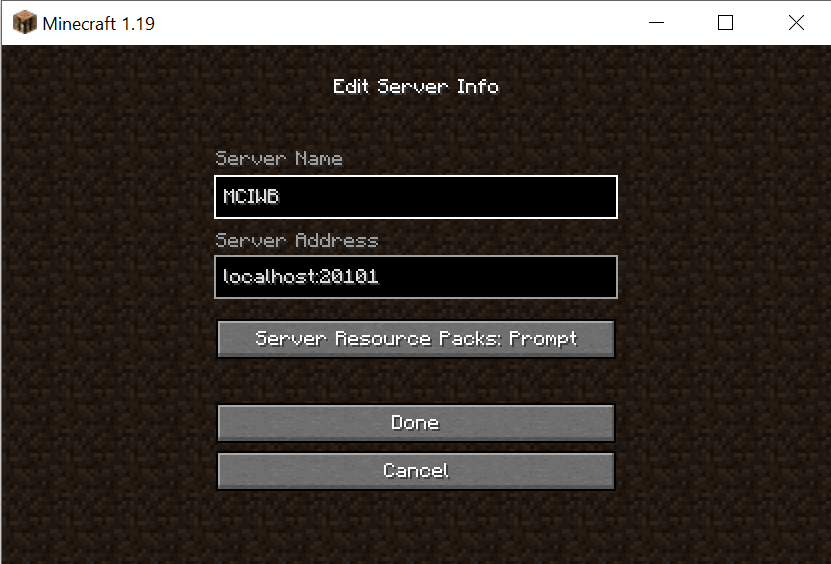

Orientation#
Introduction#
In this tutorial We will just learn some of the background concepts needed to write code to do things in Minecraft. We will then use a couple of Python commands to get warmed up.
Get a Minecraft Server Running#
Make sure we are in the right folder and have the Environment activated:
cd $HOME/my_world
source .venv/bin/activate
To start the default server, run the following command:
mciwb start
You should see the following output:
INFO: Launching existing Minecraft server in /home/giles/mciwb-server
INFO: Launching Minecraft Server 'mciwb-server' on port 20101 ...
INFO: waiting for server to come online ...
INFO: Server mciwb-server is online on port 20101
If this does not work take a look in Troubleshooting.
Connect your Client to the Server#
Now you are ready to connect your client to the server. Go back to the Minecraft client that we started in Tutorial 01 or relaunch “Minecraft Launcher” from the start menu.
Make sure “Minecraft Java Edition” is selected on the left and click “Play”.
Note
The client must run the same Minecraft release as the server, which is release 26.3. If the Launcher’s “Latest release” is newer than this then see Minecraft version for how to choose the right release.
Now choose the “Multiplayer” option and click “Add Server”. You will see a screen like this:


Set Up the Minecraft Server Connection#
Input a server name and the server address. You can make the Server Name whatever you like. The Server Address must be:
localhost:20101
Click “Done”, select your new Server and click “Join Server”.
Your player should appear in the new world on a desert next to an ocean filled with beautiful corals. I chose this starting location as it is relatively flat and a good place to try some programming ideas, yet has quite nice scenery.
If you have not played Minecraft before then take some time to familiarize
yourself with the controls and game play. You may find
this wiki
useful if you are a beginner. When you are really to move on type the
command /kill to return to the spawn point.
Connect MCIWB to your Minecraft Server#
Now you are ready to connect MCIWB to the same server that your player is inside. It is probably best at this point to arrange the windows on your screen so that you can see both Minecraft and VSCode.
Simply type this command at the bash prompt in VSCode, replace
<player_name> with your player’s name:
mciwb shell --player <player_name>
You should see output like this:
INFO: Connected to localhost on 20100
INFO: Monitoring player TransformerScorn enabled for sign commands
INFO: ######### Starting Interactive Session ##########
Python 3.12.3 (main, Apr 10 2026, 05:33:47) [GCC 13.3.0]
Type 'copyright', 'credits' or 'license' for more information
IPython 9.17.1 -- An enhanced Interactive Python. Type '?' for help.
In [1]:
The prompt at the end is the Python Interactive Shell known as iPython. In a moment we will start to type some Python commands at this prompt.
You should see only the INFO: outputs shown above. If you see ERROR: or WARNING: then take a look at Troubleshooting. If that does not help then please create a new issue at gilesknap/mciwb#issues and I will help you.
Try out Some Action Signs#
One feature of MCIWB is that it allows you to set up action signs. These are signs that your player can place in the world and they will call some Python code and tell the code which block they were placed on.
MCIWB comes pre-configured with some action signs that let you cut and paste volumes of blocks. When you told MCIWB to interact with your player it automatically gives you one of each of the currently configure action signs.
You can also create your own action signs and we will do this in a later tutorial.
For now we shall try out the copy and paste signs to have a go at flattening an area around the spawn point, ready for us to do some building with Python code.
To use the signs:
Place a
selectsign at two opposite corners of a volume of blocks. This selects the volume for copying.Place a
pastesign at the point you would like to paste a copy of the volumeNote that the last select is the ‘anchor’, it is corner of your volume that will be placed at the paste point
Place a
clearsign anywhere to clear out the current selected volume
Note that the sign must be directly in front of your player to get activated, you can tell it is activated when it disappears.
Cut and Paste Signs Demo
The above video is a demo of flattening out the area around the spawn point using copy and paste. First I select a large area of sandy floor and then I keep pasting it until I have a nice flat area to start working with.
Experimenting with iPython#
iPython stands for Interactive Python. We already saw that we can connect to a Minecraft server and get an Interactive Python shell prompt by typing the following command in the VSCode terminal:
mciwb shell --player <player_name>
Let’s try out a couple of commands on the iPython prompt. You don’t need to understand the detail of this yet, we’ll introduced the programming concepts used here gradually over the next few tutorials.
The starting point for many MCIWB iPython interactions is world.
For example you can find out your player’s position in the world with:
In [3]: world.player.pos
Out[3]: Vec3(x=622, y=73, z=-1652)
Notice that interactive Python prefixes each line with In or Out depending on whether it is input that you provide or output that is the result of executing your input.
The above example output labelled Out[3] shows that my player is at the
world spawn point x=622, y=73, z=-1652.
The world set_block function will place a block in the world.
The item Item type provides a list of all the known block types.
You can use these as follows to place a block:
world.set_block(world.player.pos, Item.BEDROCK)
This causes your player to get moved by a lump of bedrock appearing at their feet. You can also try this command which tells you what type of block your player is standing on.:
In [5]: world.get_block(world.player.pos + Direction.DOWN)
Out[5]: <Item.SAND: 'minecraft:sand'>
Here we also used Direction which provides a list of all the possible
directions. By adding Direction.DOWN to our player’s position we get
the block directly below our player.
Exiting the Python prompt#
To exit the iPython prompt type <ctrl> D`
This will exit iPython and return you to your bash
terminal prompt.